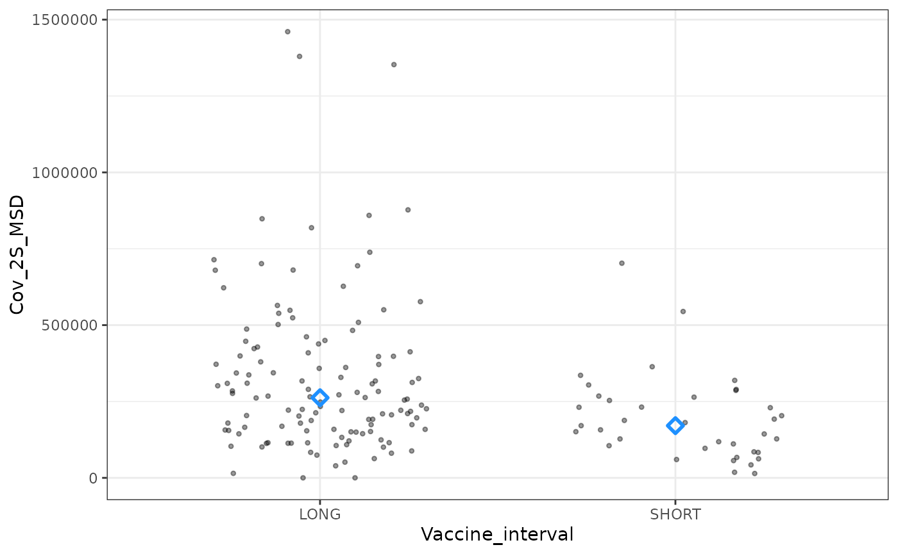
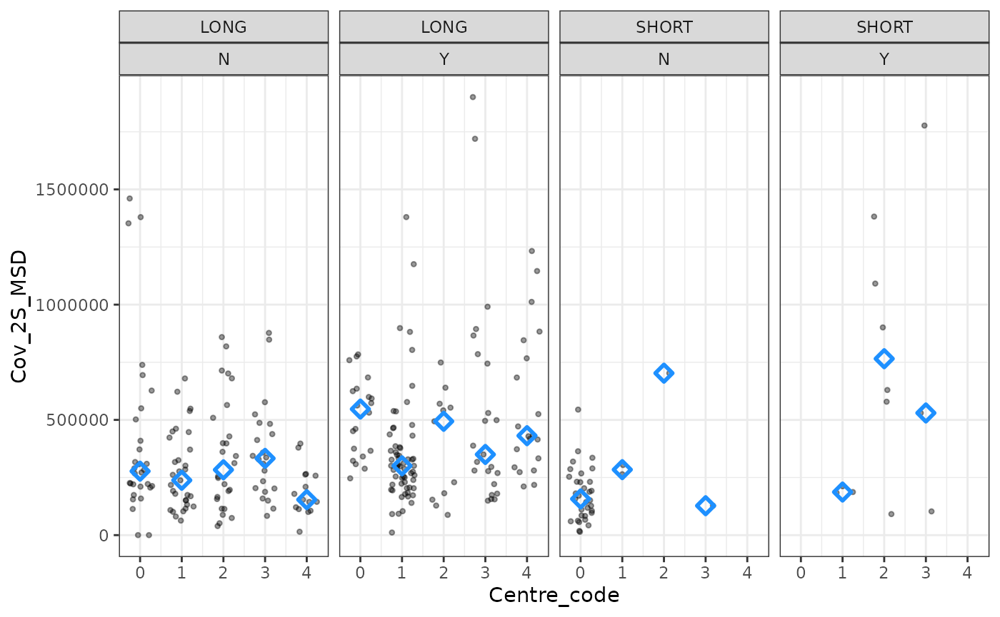
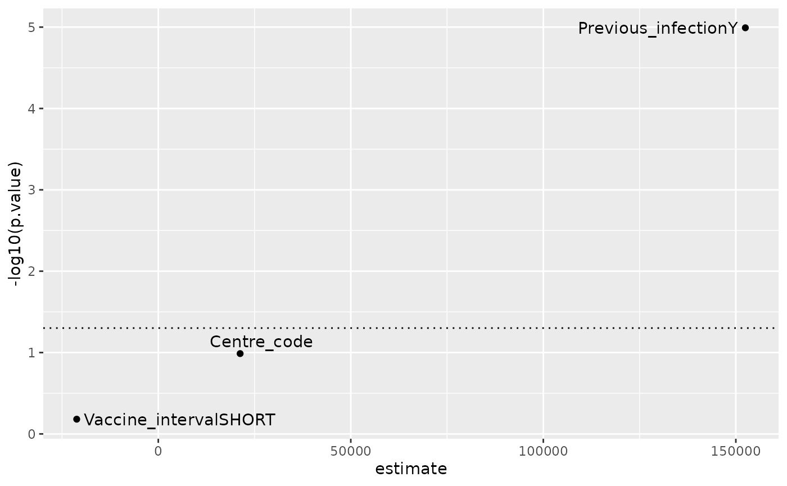
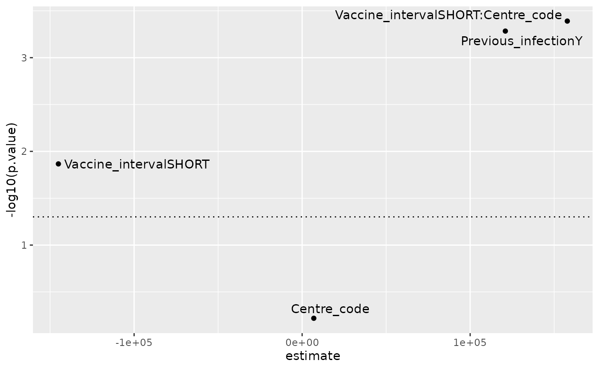
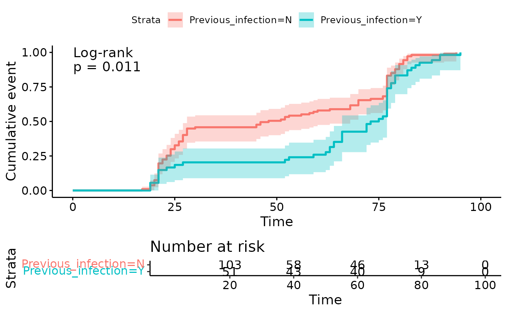
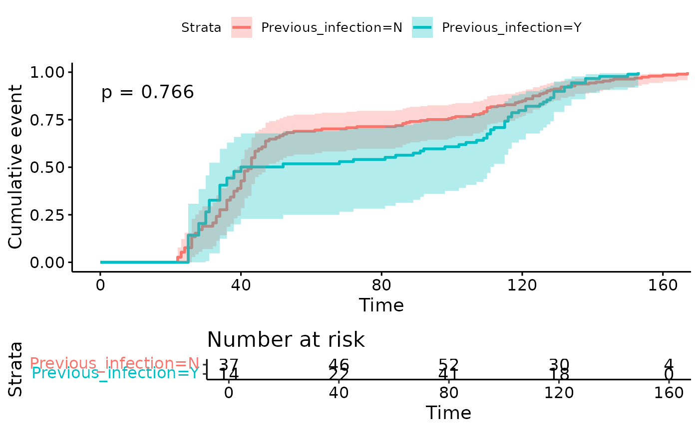

Chronogram statistics
stats.RmdIntroduction
In this vignette, we explore how to prepare chronogram data for statistical testing. We take a chronogram and perform filtering, windowing and selecting prior to an illustrative plot and a statistical test.
NOTE
This vignette does not cover when each statistical test is appropriate, nor the R functions (or arguments) for each particular statistical test.
Libraries
library(dplyr)
#>
#> Attaching package: 'dplyr'
#> The following objects are masked from 'package:stats':
#>
#> filter, lag
#> The following objects are masked from 'package:base':
#>
#> intersect, setdiff, setequal, union
library(rstatix) # pipe-friendly stats functions
#>
#> Attaching package: 'rstatix'
#> The following object is masked from 'package:stats':
#>
#> filter
library(broom) # tidy handling of lm() output
library(ggrepel) # repelled labels in ggplot2
#> Loading required package: ggplot2
library(survival) # time-to-event analysis
library(survminer) # ggplot2 from time-to-event
#> Loading required package: ggpubr
#>
#> Attaching package: 'survminer'
#> The following object is masked from 'package:survival':
#>
#> myeloma
library(chronogram)Wilcoxon test
-
Hypothesis
For individuals without prior exposure, a long interval (8-12w) between doses 1 and 2 of an mRNA vaccine will have higher antibody levels 3-5w after dose 2, than individuals following a short interval (3-4w).
-
response variable
MSD SARS-CoV-2 Spike antibody (
CoV_2S_MSD). -
categorical predictor
LONGorSHORTinterval (Vaccine_intervalin metadata). -
data
PITCH, introduced and assembled in the SQL vignette.
data("pitch_chronogram")
## filter, select, window ##
windowed_data <- pitch_chronogram %>%
filter(Previous_infection == "N") %>%
cg_window_by_metadata(dose_2_date,
preceding_days = -21,
following_days = 35) %>%
cg_select_visit(visit_col = Cov_2S_BAU,
visit = "latest")
## plot ##
windowed_data %>%
ggplot(aes(x = Vaccine_interval, y = Cov_2S_MSD)) +
geom_point(shape = 20, alpha = 0.4,
position = position_jitter(0.3)) +
stat_summary(
geom = "point",
fun = "median",
shape = 5,
size = 2,
stroke = 1.5,
col = "dodgerblue") +
theme_bw()
## stats ##
windowed_data %>%
wilcox_test(Cov_2S_MSD ~ Vaccine_interval) ## rstatix::wilcox_test
#> # A tibble: 1 × 7
#> .y. group1 group2 n1 n2 statistic p
#> * <chr> <chr> <chr> <int> <int> <dbl> <dbl>
#> 1 Cov_2S_MSD LONG SHORT 124 37 3117 0.00095Linear regression
-
Hypothesis
SARS-CoV-2 Spike antibody is dependent on vaccine interval, previous infection, and not on study centre.
-
response variable
MSD SARS-CoV-2 Spike (
CoV_2S_MSD). -
predictors
LONGorSHORTinterval (Vaccine_intervalin metadata).study centre (
Centre_codein metadata).Previous infection (
Y/NinPrevious_infectionin metadata).
-
data
PITCH, introduced and assembled in the SQL vignette.
data("pitch_chronogram")
## filter, select, window ##
windowed_data <- pitch_chronogram %>%
cg_window_by_metadata(dose_2_date,
preceding_days = -21,
following_days = 35) %>%
cg_select_visit(visit_col = Cov_2S_BAU,
visit = "latest")
## plot ##
windowed_data %>%
ggplot(aes(x = Centre_code, y = Cov_2S_MSD)) +
geom_point(shape = 20, alpha = 0.4,
position = position_jitter(0.3)) +
stat_summary(
geom = "point",
fun = "median",
shape = 5,
size = 2,
stroke = 1.5,
col = "dodgerblue") +
facet_grid(. ~Vaccine_interval + Previous_infection ) +
theme_bw()
## stats ##
lm_res <- windowed_data %>%
lm(Cov_2S_MSD ~
Vaccine_interval +
Previous_infection +
Centre_code, data = .)
## results from lm ##
summary(lm_res)
#>
#> Call:
#> lm(formula = Cov_2S_MSD ~ Vaccine_interval + Previous_infection +
#> Centre_code, data = .)
#>
#> Residuals:
#> Min 1Q Median 3Q Max
#> -435977 -187858 -77071 92963 1410750
#>
#> Coefficients:
#> Estimate Std. Error t value Pr(>|t|)
#> (Intercept) 273547 32450 8.430 1.41e-15 ***
#> Vaccine_intervalSHORT -21186 47969 -0.442 0.659
#> Previous_infectionY 152471 33969 4.489 1.02e-05 ***
#> Centre_code 21256 12996 1.636 0.103
#> ---
#> Signif. codes: 0 '***' 0.001 '**' 0.01 '*' 0.05 '.' 0.1 ' ' 1
#>
#> Residual standard error: 290300 on 304 degrees of freedom
#> Multiple R-squared: 0.08457, Adjusted R-squared: 0.07554
#> F-statistic: 9.362 on 3 and 304 DF, p-value: 6.161e-06
## easier to read, and plot from broom::tidy ##
tidy(lm_res)
#> # A tibble: 4 × 5
#> term estimate std.error statistic p.value
#> <chr> <dbl> <dbl> <dbl> <dbl>
#> 1 (Intercept) 273547. 32450. 8.43 1.41e-15
#> 2 Vaccine_intervalSHORT -21186. 47969. -0.442 6.59e- 1
#> 3 Previous_infectionY 152471. 33969. 4.49 1.02e- 5
#> 4 Centre_code 21256. 12996. 1.64 1.03e- 1
tidy(lm_res) %>%
filter(term != "(Intercept)") %>%
ggplot(aes(x=estimate, y = -log10(p.value),
label = term)) +
geom_point() +
geom_text_repel() +
geom_hline(yintercept = -log10(0.05),
linetype = 3)
Linear regression with interaction terms
Setup as for Linear regression example above.
Since nearly all of the SHORT interval data were from a
single centre, we add an interaction term between centre and
interval.
## stats - lm with interaction terms ##
## note the *
lm_res_interactions <- windowed_data %>%
lm(Cov_2S_MSD ~
Previous_infection +
Vaccine_interval *
Centre_code, data = .)
## results from lm ##
summary(lm_res_interactions )
#>
#> Call:
#> lm(formula = Cov_2S_MSD ~ Previous_infection + Vaccine_interval *
#> Centre_code, data = .)
#>
#> Residuals:
#> Min 1Q Median 3Q Max
#> -681468 -176802 -69633 98854 1444423
#>
#> Coefficients:
#> Estimate Std. Error t value Pr(>|t|)
#> (Intercept) 314364 33824 9.294 < 2e-16 ***
#> Previous_infectionY 120937 34477 3.508 0.000520 ***
#> Vaccine_intervalSHORT -145061 58443 -2.482 0.013603 *
#> Centre_code 6937 13365 0.519 0.604099
#> Vaccine_intervalSHORT:Centre_code 157812 44140 3.575 0.000407 ***
#> ---
#> Signif. codes: 0 '***' 0.001 '**' 0.01 '*' 0.05 '.' 0.1 ' ' 1
#>
#> Residual standard error: 284800 on 303 degrees of freedom
#> Multiple R-squared: 0.1216, Adjusted R-squared: 0.11
#> F-statistic: 10.49 on 4 and 303 DF, p-value: 5.699e-08
## easier to read, and plot from broom::tidy ##
tidy(lm_res_interactions )
#> # A tibble: 5 × 5
#> term estimate std.error statistic p.value
#> <chr> <dbl> <dbl> <dbl> <dbl>
#> 1 (Intercept) 314364. 33824. 9.29 3.02e-18
#> 2 Previous_infectionY 120937. 34477. 3.51 5.20e- 4
#> 3 Vaccine_intervalSHORT -145061. 58443. -2.48 1.36e- 2
#> 4 Centre_code 6937. 13365. 0.519 6.04e- 1
#> 5 Vaccine_intervalSHORT:Centre_code 157812. 44140. 3.58 4.07e- 4
tidy(lm_res_interactions ) %>%
filter(term != "(Intercept)") %>%
ggplot(aes(x=estimate, y = -log10(p.value),
label = term)) +
geom_point() +
geom_text_repel() +
geom_hline(yintercept = -log10(0.05),
linetype = 3)
The model
Cov_2S_MSD ~ Previous_infection + Vaccine_interval * Centre_code,
with an interaction term between interval and centre performs
reasonably, with a neglible effect assigned to centre alone, and larger
effects assigned to vaccine interval and previous infection.
By ANOVA,
Cov_2S_MSD ~ Previous_infection + Vaccine_interval * Centre_code
performs better than
Cov_2S_MSD ~ Previous_infection + Vaccine_interval + Centre_code:
anova(lm_res,
lm_res_interactions)
#> Analysis of Variance Table
#>
#> Model 1: Cov_2S_MSD ~ Vaccine_interval + Previous_infection + Centre_code
#> Model 2: Cov_2S_MSD ~ Previous_infection + Vaccine_interval * Centre_code
#> Res.Df RSS Df Sum of Sq F Pr(>F)
#> 1 304 2.5611e+13
#> 2 303 2.4575e+13 1 1.0367e+12 12.783 0.000407 ***
#> ---
#> Signif. codes: 0 '***' 0.001 '**' 0.01 '*' 0.05 '.' 0.1 ' ' 1Either model describes ~10% of the total variance in Spike antibodies:
bind_rows(
# this is broom::glance() : #
glance(lm_res),
glance(lm_res_interactions)
)
#> # A tibble: 2 × 12
#> r.squared adj.r.squared sigma statistic p.value df logLik AIC BIC
#> <dbl> <dbl> <dbl> <dbl> <dbl> <dbl> <dbl> <dbl> <dbl>
#> 1 0.0846 0.0755 290255. 9.36 6.16e-6 3 -4309. 8628. 8647.
#> 2 0.122 0.110 284788. 10.5 5.70e-8 4 -4303. 8618. 8640.
#> # ℹ 3 more variables: deviance <dbl>, df.residual <int>, nobs <int>Time to event analysis
-
Hypothesis
Within centre 1, dose 2 (“event”) occurs earlier in individuals without prior infection.
-
Start
date of dose 1
-
Event
date of dose 2
-
Censoring
none (all of PITCH have both doses)
-
Filtering
to centre 0, as that centre has an approximately equal split of
long:shortinterval.
NOTE
Changes have been made to the de-identified public dataset (DOI: 10.17632/fyp26zjgmj.1).
the public data reports dates as MM/YYYY. To build a chronogram we have assigned randomly from 1-28 for DD in DD/MM/YYYY for dose 1, and used the available intervals in days to place the remaining data in date time. For illustration purposes, we need plausible DD/MM/YYYY dates - they are not real.
not all of the public dataset has been used in this example (some assays not included).
For meaningful time to event analysis, real rather than plausible dates are needed. This vignette shows example code, but the results themselves are insecure.
data("pitch_chronogram")
## filter, de-duplicate ##
t_to_event_data <- pitch_chronogram %>%
filter(Centre_code == 0) %>%
group_by(ID) %>%
slice_head() %>%
ungroup() %>%
## all receive dose 2 ##
mutate(outcome = 1) %>%
mutate(dose_2_crude =
as.numeric(
dose_2_date - (dose_1_date)))
fit<- survfit(Surv(time = dose_2_crude,
# time2 = dose_2_d,
outcome) ~ Previous_infection, data = t_to_event_data)
ggsurvplot(fit,
conf.int = TRUE,
data = t_to_event_data,
fun = "event",
risk.table = TRUE,
pval = TRUE,
pval.coord = c(0.1, 0.9),
pval.method = TRUE,
pval.method.coord = c(0.1, 1))
Left-censored time to event analysis
Here we use left censoring, such that a given individual is only considered at-risk for the event (dose 2) once they have had their first dose.
In the real world, left censoring is useful if the risk of exposure might change over calendar time. In this example dataset, it highlights the use of plausible (DD randomly assigned to MM-YYYY), rather than real dates.
data("pitch_chronogram")
## filter, de-duplicate ##
t2_to_event_data <- pitch_chronogram %>%
filter(Centre_code == 0) %>%
group_by(ID) %>%
slice_head() %>%
ungroup() %>%
## all receive dose 2 ##
mutate(outcome = 1) %>%
## use the earliest date of dose 1 to anchor other times ##
mutate(dose_1_d =
as.numeric(
dose_1_date - min(dose_1_date))) %>%
mutate(dose_2_d =
as.numeric(
dose_2_date - min(dose_1_date)))
fit2 <- survfit(Surv(time = dose_1_d,
time2 = dose_2_d,
outcome) ~ Previous_infection, data = t2_to_event_data)
ggsurvplot(
fit2,
conf.int = TRUE,
data = t2_to_event_data,
fun = "event",
risk.table = TRUE,
## calcuate Cox PH P value ##
pval =
round(
summary(
coxph(Surv(time = dose_1_d,
time2 = dose_2_d,
outcome) ~ Previous_infection,
data = t2_to_event_data)
)$coefficients[,"Pr(>|z|)"],
digits = 3),
pval.coord = c(0.1, 0.9)
# pval.method.coord = c(0.1, 1)
)
Note:
now the x axis runs to over 5 months as it covers the ~2m period between the earliest and latest first dose.
the numbers at risk can increase between time points as more individuals become eligible (here, by receiving dose 1).
The difference between strata is now much less apparent. This is likely due to our plausible rather than real dates in the example dataset.
Summary
This vignette shows code to map data from a chronogram to a variety of different statistical tests.
SessionInfo
sessionInfo()
#> R version 4.4.1 (2024-06-14)
#> Platform: x86_64-pc-linux-gnu
#> Running under: Ubuntu 22.04.4 LTS
#>
#> Matrix products: default
#> BLAS: /usr/lib/x86_64-linux-gnu/openblas-pthread/libblas.so.3
#> LAPACK: /usr/lib/x86_64-linux-gnu/openblas-pthread/libopenblasp-r0.3.20.so; LAPACK version 3.10.0
#>
#> locale:
#> [1] LC_CTYPE=C.UTF-8 LC_NUMERIC=C LC_TIME=C.UTF-8
#> [4] LC_COLLATE=C.UTF-8 LC_MONETARY=C.UTF-8 LC_MESSAGES=C.UTF-8
#> [7] LC_PAPER=C.UTF-8 LC_NAME=C LC_ADDRESS=C
#> [10] LC_TELEPHONE=C LC_MEASUREMENT=C.UTF-8 LC_IDENTIFICATION=C
#>
#> time zone: UTC
#> tzcode source: system (glibc)
#>
#> attached base packages:
#> [1] stats graphics grDevices utils datasets methods base
#>
#> other attached packages:
#> [1] chronogram_1.0.0 survminer_0.4.9 ggpubr_0.6.0 survival_3.6-4
#> [5] ggrepel_0.9.5 ggplot2_3.5.1 broom_1.0.6 rstatix_0.7.2
#> [9] dplyr_1.1.4
#>
#> loaded via a namespace (and not attached):
#> [1] gtable_0.3.5 xfun_0.46 bslib_0.8.0 lattice_0.22-6
#> [5] vctrs_0.6.5 tools_4.4.1 generics_0.1.3 tibble_3.2.1
#> [9] fansi_1.0.6 highr_0.11 pkgconfig_2.0.3 Matrix_1.7-0
#> [13] data.table_1.15.4 desc_1.4.3 lifecycle_1.0.4 stringr_1.5.1
#> [17] compiler_4.4.1 farver_2.1.2 textshaping_0.4.0 munsell_0.5.1
#> [21] carData_3.0-5 htmltools_0.5.8.1 sass_0.4.9 yaml_2.3.10
#> [25] pillar_1.9.0 pkgdown_2.1.0 car_3.1-2 jquerylib_0.1.4
#> [29] tidyr_1.3.1 cachem_1.1.0 abind_1.4-5 km.ci_0.5-6
#> [33] commonmark_1.9.1 tidyselect_1.2.1 digest_0.6.36 stringi_1.8.4
#> [37] purrr_1.0.2 labeling_0.4.3 splines_4.4.1 fastmap_1.2.0
#> [41] grid_4.4.1 colorspace_2.1-1 cli_3.6.3 magrittr_2.0.3
#> [45] utf8_1.2.4 withr_3.0.1 scales_1.3.0 backports_1.5.0
#> [49] rmarkdown_2.27 ggtext_0.1.2 gridExtra_2.3 ggsignif_0.6.4
#> [53] ragg_1.3.2 zoo_1.8-12 evaluate_0.24.0 knitr_1.48
#> [57] KMsurv_0.1-5 markdown_1.13 survMisc_0.5.6 rlang_1.1.4
#> [61] gridtext_0.1.5 Rcpp_1.0.13 xtable_1.8-4 glue_1.7.0
#> [65] xml2_1.3.6 jsonlite_1.8.8 R6_2.5.1 systemfonts_1.1.0
#> [69] fs_1.6.4